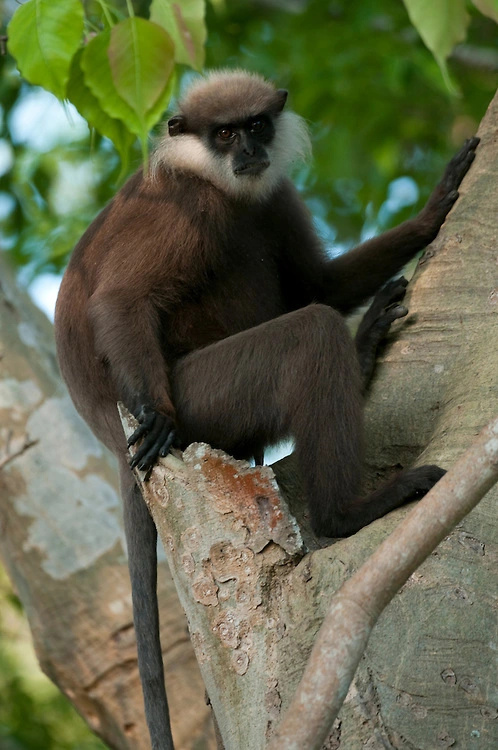

| Asian Elephant |
Yala National Park, Udawalawe NP, Minneriya NP |
.png) |
Sri Lanka has one of the highest densities of Asian elephants in the world.
Elephants can be seen in large gatherings during the "Gathering" at Minneriya NP.
Considered a cultural symbol, elephants play a significant role in Sri Lankan festivals.
|
| Leopard |
Wilpattu NP, Yala NP |
 - Copy.png) |
Sri Lankan leopards are a subspecies of the Indian leopard and are known for their
elusive
nature.
Yala National Park has one of the highest leopard densities in the world.
Leopards are skilled climbers and are often found resting on tree branches.
|
| Sloth Bear |
Yala NP, Wilpattu NP, Sinharaja Forest |
.png) |
Sloth bears are known for their unique appearance and distinctive white V-shaped
mark on their chest.
They primarily feed on termites and ants, using their long claws to dig into
termite mounds.
Sloth bears are generally nocturnal, and sightings can be rare.
|
| Purple-faced Langur |
Sinharaja Forest Reserve, Horton Plains NP |
 |
This primate is endemic to Sri Lanka and is characterized by its distinctive
purple face.
They are arboreal and can be seen in the treetops of rainforests.
Purple-faced langurs are an important species for the conservation of Sri
Lanka's biodiversity.
|
| Indian Star Tortoise |
Star Tortoise Mannar Island, Wilpattu NP, Bundala NP |
.png) |
Recognized for its striking star-like patterns on its shell.
They are terrestrial and are often found in dry zone habitats.
Star tortoises are listed as "Vulnerable" due to habitat loss and illegal pet
trade.
|
| Blue Whale |
Mirissa, Kalpitiya |
.png) |
Sri Lanka is one of the best places in the world for blue whale watching.
Blue whales are the largest animals on Earth, and their migration patterns can
be observed in Sri Lankan waters.
The waters off the southern coast are known for sightings of various whale
species.
|
.png)


.png)
.png)